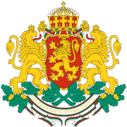
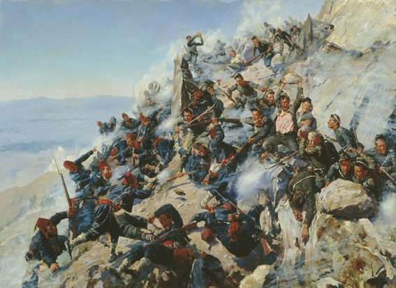

… И днес йощ Балканът, щом буря зафаща,
спомня тоз ден бурен, шуми и препраща
славата му дивна като някой ек
от урва на урва и от век на век!
из „Опълченците на Шипка“, Иван Вазов

3 март е националният празник на България. На този ден отбелязваме Освобождението на страната след близо 5 века Османско робство. На този ден е подписан предварителен договор, известен в историята като Санстефански мирен договор за прекратяването на Руско-турската Освободителна война от 1877-1878 г. Най-прочутата картина за боевете на връх Шипка се нарича “Защитата на Орлово гнездо от брянци и орловци 1877 г.” - нарисувана е през 1893 г. от руския поручик Алексей Попов. Прочетете повече за празника: статия.